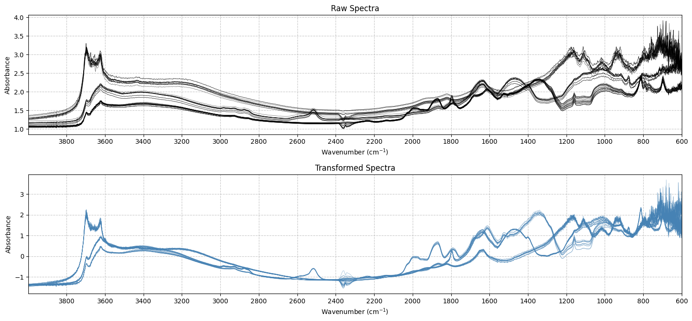

from soilspecdata.datasets.ossl import get_ossl
from sklearn.pipeline import Pipeline
from soilspectfm.visualization import plot_spectra
from matplotlib import pyplot as plt
from soilspectfm.visualization import plot_spectra_comparison
from soilspectfm.utils import load_toy_mir, load_toy_noisy_mirCore API
Scikit-learn compatible transforms for spectroscopic data preprocessing.
X, ws = load_toy_mir()Baseline corrections
SNV
SNV (center_func:Callable=<function mean at 0x7f2b71133130>, scale_func:Callable=<function std at 0x7f2b71133330>, eps:float=1e-10)
*Standard Normal Variate transformation with flexible centering and scaling.
Common centering functions:
- np.mean: Standard choice, sensitive to outliers
- np.median: Robust to outliers, slower computation
- np.min: Ensures positive values, sensitive to noise
- lambda x, **kw: 0: No centering, preserves absolute valuesCommon scaling functions:
- np.std: Standard choice, assumes normal distribution
- lambda x, **kw: np.sqrt(np.mean(x**2, **kw)): RMS, good for baseline variations
- scipy.stats.iqr: Robust to outliers, ignores extreme peaks
- lambda x, **kw: np.max(x, **kw) - np.min(x, **kw): Preserves relative peaks
- lambda x, **kw: np.median(np.abs(x - np.median(x, **kw)), **kw): Most robust, slower*| Type | Default | Details | |
|---|---|---|---|
| center_func | Callable | mean | Function to center the data |
| scale_func | Callable | std | Function to scale the data |
| eps | float | 1e-10 | Small value to avoid division by zero |
Exported source
class SNV(BaseEstimator, TransformerMixin):
"""
Standard Normal Variate transformation with flexible centering and scaling.
Common centering functions:
- np.mean: Standard choice, sensitive to outliers
- np.median: Robust to outliers, slower computation
- np.min: Ensures positive values, sensitive to noise
- lambda x, **kw: 0: No centering, preserves absolute values
Common scaling functions:
- np.std: Standard choice, assumes normal distribution
- lambda x, **kw: np.sqrt(np.mean(x**2, **kw)): RMS, good for baseline variations
- scipy.stats.iqr: Robust to outliers, ignores extreme peaks
- lambda x, **kw: np.max(x, **kw) - np.min(x, **kw): Preserves relative peaks
- lambda x, **kw: np.median(np.abs(x - np.median(x, **kw)), **kw): Most robust, slower
"""
def __init__(self,
center_func: Callable=np.mean, # Function to center the data
scale_func: Callable=np.std, # Function to scale the data
eps: float=1e-10 # Small value to avoid division by zero
):
store_attr()
def fit(self, X, y=None): return self
def transform(self,
X: np.ndarray # Spectral data to be transformed
) -> np.ndarray: # Transformed spectra
center = self.center_func(X, axis=1, keepdims=True)
scale = self.scale_func(X - center, axis=1, keepdims=True) + self.eps
return (X - center) / scaleX_tfm = SNV().fit_transform(X)plot_spectra_comparison(
X,
SNV().fit_transform(X),
ws,
raw_title='Raw Spectra',
transformed_title='Transformed Spectra'
);
MSC
MSC (reference_method:Union[str,numpy.ndarray]='mean', n_jobs:Optional[int]=None)
Multiplicative Scatter Correction with fastai-style implementation
| Type | Default | Details | |
|---|---|---|---|
| reference_method | Union | mean | Method to compute reference spectrum (‘mean’/‘median’) or custom reference spectrum |
| n_jobs | Optional | None | Number of parallel jobs to run. None means using all processors |
Exported source
class MSC(BaseEstimator, TransformerMixin):
"Multiplicative Scatter Correction with fastai-style implementation"
def __init__(self,
reference_method: Union[str, np.ndarray] = 'mean', # Method to compute reference spectrum ('mean'/'median') or custom reference spectrum
n_jobs: Optional[int] = None # Number of parallel jobs to run. None means using all processors
):
store_attr()
self.reference_ = None
def _compute_reference(self, x: np.ndarray):
"Compute reference spectrum from array using specified method"
if isinstance(self.reference_method, str):
assert self.reference_method in ['mean', 'median'], "reference_method must be 'mean' or 'median'"
return np.mean(x, axis=0) if self.reference_method == 'mean' else np.median(x, axis=0)
return np.array(self.reference_method)
def fit(self, X: np.ndarray, y=None):
"Compute the reference spectrum"
self.reference_ = self._compute_reference(X)
return self
def _transform_single(self,
x: np.ndarray # Spectral data to be transformed
) -> np.ndarray: # Transformed spectra
"Transform a single spectrum"
coef = np.polyfit(self.reference_, x, deg=1)
return (x - coef[1]) / coef[0]
def transform(self,
X: np.ndarray # Spectral data to be transformed
) -> np.ndarray: # Transformed spectra
"Apply MSC to the spectra"
if self.reference_ is None: raise ValueError("MSC not fitted. Call 'fit' first.")
return np.array(parallel(self._transform_single, X, n_workers=self.n_jobs))X_tfm = MSC(reference_method='median').fit_transform(X)plot_spectra_comparison(
X,
MSC().fit_transform(X),
ws,
raw_title='Raw Spectra',
transformed_title='MSC Transformed Spectra'
);References: - https://eigenvector.com/wp-content/uploads/2020/01/RobustFittingtoBasisFunctionsIII.pdf - https://nirpyresearch.com/two-methods-baseline-correction-spectral-data/ - https://diposit.ub.edu/dspace/bitstream/2445/188026/1/2014_IEEE_Adaptive_MarcoS_postprint.pdf
class ALS(BaseEstimator, TransformerMixin):
"Asymmetric least squares detrending"
passDerivatives
TakeDerivative
TakeDerivative (window_length=11, polyorder=1, deriv=1)
Creates scikit-learn derivation + savitsky-golay smoothing custom transformer
| Type | Default | Details | |
|---|---|---|---|
| window_length | int | 11 | Window length for the savgol filter |
| polyorder | int | 1 | Polynomial order for the savgol filter |
| deriv | int | 1 | Derivation degree |
Exported source
class TakeDerivative(BaseEstimator, TransformerMixin):
"Creates scikit-learn derivation + savitsky-golay smoothing custom transformer"
def __init__(self,
window_length=11, # Window length for the savgol filter
polyorder=1, # Polynomial order for the savgol filter
deriv=1 # Derivation degree
):
self.window_length = window_length
self.polyorder = polyorder
self.deriv = deriv
def fit(self, X, y=None):
return self
def transform(self, X, y=None):
return savgol_filter(X, self.window_length, self.polyorder, self.deriv)How to use the TakeDerivative transformer in combination with the SNV transformer?
pipe = Pipeline([('snv', SNV()),
('deriv', TakeDerivative(deriv=1))
])
X_tfm = pipe.fit_transform(X)plot_spectra_comparison(
X,
MSC().fit_transform(X),
ws,
raw_title='Raw Spectra',
transformed_title='SNV + Derivative (1st order) Transformed Spectra'
);Smoothing
WaveletDenoise
WaveletDenoise (wavelet:str='db6', level:Optional[int]=None, threshold_mode:str='soft')
Wavelet denoising transformer compatible with scikit-learn.
| Type | Default | Details | |
|---|---|---|---|
| wavelet | str | db6 | Wavelet to use for decomposition |
| level | Optional | None | Decomposition level. If None, maximum level is used |
| threshold_mode | str | soft | Thresholding mode (‘soft’/‘hard’) |
Exported source
class WaveletDenoise(BaseEstimator, TransformerMixin):
"Wavelet denoising transformer compatible with scikit-learn."
def __init__(self,
wavelet:str='db6', # Wavelet to use for decomposition
level:Optional[int]=None, # Decomposition level. If None, maximum level is used
threshold_mode:str='soft' # Thresholding mode ('soft'/'hard')
):
store_attr()
def _denoise_single(self, spectrum):
"Denoise a single spectrum"
# If level is None, calculate maximum possible level
if self.level is None:
self.level_ = pywt.dwt_max_level(len(spectrum),
pywt.Wavelet(self.wavelet).dec_len)
else:
self.level_ = self.level
coeffs = pywt.wavedec(spectrum, self.wavelet, level=self.level_)
# Calculate threshold using MAD estimator
detail_coeffs = np.concatenate([c for c in coeffs[1:]])
sigma = np.median(np.abs(detail_coeffs)) / 0.6745
threshold = sigma * np.sqrt(2 * np.log(len(spectrum)))
# Apply threshold to detail coefficients
new_coeffs = list(coeffs)
for i in range(1, len(coeffs)):
new_coeffs[i] = pywt.threshold(coeffs[i],
threshold * (1/2**((self.level_-i)/2)),
mode=self.threshold_mode)
denoised = pywt.waverec(new_coeffs, self.wavelet)
return denoised[:len(spectrum)]
def fit(self, X, y=None):
"Fit the transformer (no-op)"
return self
def transform(self, X):
"Apply wavelet denoising to spectra."
X = np.asarray(X)
X_denoised = np.zeros_like(X)
for i in range(X.shape[0]): X_denoised[i] = self._denoise_single(X[i])
return X_denoisedX, ws, _ = load_toy_noisy_mir()
print(f'X shape: {X.shape}, First 5 wavenumbers: {ws[:5]}')
denoiser = WaveletDenoise(wavelet='db6', level=5, threshold_mode='soft')
X_denoised = denoiser.fit_transform(X)
plot_spectra(X - X_denoised, ws, alpha=0.1, title='Raw Spectra - Wavelet Denoised');X shape: (48, 3315), First 5 wavenumbers: [599.91153162 600.93702142 601.96251122 602.98800102 604.01349081]SavGolSmooth
SavGolSmooth (window_length:int=15, polyorder:int=3, deriv:int=0)
Savitzky-Golay smoothing transformer compatible with scikit-learn.
| Type | Default | Details | |
|---|---|---|---|
| window_length | int | 15 | Window length for the savgol filter |
| polyorder | int | 3 | Polynomial order for the savgol filter |
| deriv | int | 0 | Derivation degree |
Exported source
class SavGolSmooth(BaseEstimator, TransformerMixin):
"Savitzky-Golay smoothing transformer compatible with scikit-learn."
def __init__(self,
window_length:int=15, # Window length for the savgol filter
polyorder:int=3, # Polynomial order for the savgol filter
deriv:int=0 # Derivation degree
):
store_attr()
def _validate_params(self):
"Validate parameters."
if self.window_length % 2 == 0:
raise ValueError("window_length must be odd")
if self.window_length <= self.polyorder:
raise ValueError("window_length must be greater than polyorder")
if self.deriv > self.polyorder:
raise ValueError("deriv must be <= polyorder")
def fit(self,
X:np.ndarray,# Spectral data to be smoothed.
y:Optional[np.ndarray]=None # Ignored
):
"Validate parameters and fit the transformer."
self._validate_params()
return self
def transform(self,
X: np.ndarray # Spectral data to be smoothed.
) -> np.ndarray: # Smoothed spectra
"Apply Savitzky-Golay filter to spectra."
X = np.asarray(X)
X_smoothed = np.zeros_like(X)
for i in range(X.shape[0]):
X_smoothed[i] = savgol_filter(X[i],
window_length=self.window_length,
polyorder=self.polyorder,
deriv=self.deriv)
return X_smoothedsmoother = SavGolSmooth(window_length=15, polyorder=3)
X_smoothed = smoother.fit_transform(X)
plot_spectra_comparison(X, X_smoothed, ws, raw_title='Raw Spectra', transformed_title='SavGolSmooth Transformed Spectra');Other Transformations
ToAbsorbance
ToAbsorbance (eps:float=1e-05)
Creates scikit-learn transformer to transform reflectance to absorbance
| Type | Default | Details | |
|---|---|---|---|
| eps | float | 1e-05 | Small value to avoid log(0) |
Exported source
class ToAbsorbance(BaseEstimator, TransformerMixin):
"Creates scikit-learn transformer to transform reflectance to absorbance"
def __init__(self,
eps: float=1e-5 # Small value to avoid log(0)
): self.eps = eps
def fit(self, X, y=None): return self
def transform(self, X, y=None): return -np.log10(np.clip(X, self.eps, 1))Resample
Resample (source_x:numpy.ndarray, target_x:numpy.ndarray, interpolation_kind:str='cubic')
Resampling transformer compatible with scikit-learn.
| Type | Default | Details | |
|---|---|---|---|
| source_x | ndarray | Source x-axis points (wavenumbers or wavelengths) | |
| target_x | ndarray | Target x-axis points (wavenumbers or wavelengths) for resampling | |
| interpolation_kind | str | cubic | Type of spline interpolation to use |
Exported source
class Resample(BaseEstimator, TransformerMixin):
"Resampling transformer compatible with scikit-learn."
def __init__(self,
source_x: np.ndarray, # Source x-axis points (wavenumbers or wavelengths)
target_x: np.ndarray, # Target x-axis points (wavenumbers or wavelengths) for resampling
interpolation_kind: str='cubic' # Type of spline interpolation to use
):
store_attr()
def fit(self,
X: np.ndarray, # Spectral data to be resampled
y: np.ndarray=None # Not used
):
"No-op in that particular case"
return self
def transform(self,
X: np.ndarray # Spectral data to be resampled
):
"Resample spectra to new x-axis points."
X = np.asarray(X)
X_transformed = np.zeros((X.shape[0], len(self.target_x)))
for i in range(X.shape[0]):
cs = CubicSpline(self.source_x, X[i])
X_transformed[i] = cs(self.target_x)
return X_transformednew_ws = np.arange(600, 4001, 2) # New wavenumber axis
resampler = Resample(source_x=ws, target_x=new_ws)
X_resampled = resampler.fit_transform(X)
print(f'X_resampled.shape: {X_resampled.shape}, New wavenumbers: {new_ws[:10]}')
plot_spectra(X, ws, ascending=False,title='Original Spectra', alpha=0.2);
plot_spectra(X_resampled, new_ws, ascending=False,title='Resampled Spectra', alpha=0.2, color='steelblue');X_resampled.shape: (48, 1701), New wavenumbers: [600 602 604 606 608 610 612 614 616 618]Trim
Trim (ws:numpy.ndarray, w_min:Optional[float]=None, w_max:Optional[float]=None)
Trims the spectra to the specified wavenumbers (or wavelengths) range.
| Type | Default | Details | |
|---|---|---|---|
| ws | ndarray | Wavenumbers or wavelengths | |
| w_min | Optional | None | Minimum wavenumber or wavelength |
| w_max | Optional | None | Maximum wavenumber or wavelength |
Exported source
class Trim(BaseEstimator, TransformerMixin):
"Trims the spectra to the specified wavenumbers (or wavelengths) range."
def __init__(self,
ws: np.ndarray, # Wavenumbers or wavelengths
w_min: Optional[float]=None, # Minimum wavenumber or wavelength
w_max: Optional[float]=None # Maximum wavenumber or wavelength
):
store_attr()
def fit(self,
X: np.ndarray, # Spectra to be trimmed
y: Optional[np.ndarray]=None # Ignored
):
"Store wavenumbers and compute indices for trimming"
self.mask_ = (self.ws >= (self.w_min if self.w_min else -np.inf)) & \
(self.ws <= (self.w_max if self.w_max else np.inf))
return self
def transform(self, X: np.ndarray) -> np.ndarray:
"Trim the spectra"
return X[:, self.mask_]
def get_wavenumbers(self) -> np.ndarray:
"Return the trimmed wavenumbers"
return self.ws[self.mask_]trimmer = Trim(ws, w_min=650, w_max=4000)
X_trimmed = trimmer.fit_transform(X)
print(f'X_trimmed.shape: {X_trimmed.shape}, Trimmed wavenumbers: {trimmer.get_wavenumbers()[:10]}')
plot_spectra(X_trimmed, trimmer.get_wavenumbers(), title='Trimmed Spectra', ascending=False);X_trimmed.shape: (50, 1676), Trimmed wavenumbers: [650 652 654 656 658 660 662 664 666 668]